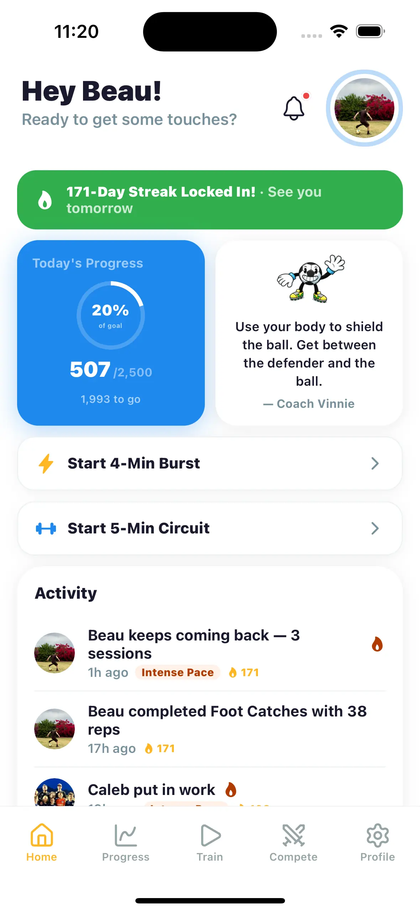

1,000 touches a day is a youth soccer benchmark for daily ball work. Done as fast footwork drills, it takes only 10–15 minutes, and players chasing the next level aim for 2,500–5,000. The hard part isn’t the touches — it’s doing them every single day.
Why 1,000 touches a day works
Coaches from grassroots clubs to pro academies repeat the same message: the players who touch the ball the most improve the fastest. Every touch — inside, outside, sole, laces, left foot, right foot — builds the muscle memory that lets a player control the ball without thinking. When ball control is automatic, the brain is free for the parts of the game you can’t drill alone: scanning, decisions, positioning.
Team practice can’t get you there. In a typical hour-long session with lines, talks, and scrimmages, most kids get a few hundred touches at best. The gap between average players and standout players is almost always closed on their own time, in the backyard, ten minutes at a time.
How long does 1,000 touches actually take?
Much less than most parents expect. A focused footwork circuit produces roughly 100 touches per minute, which means:
- 1,000 touches ≈ 10–15 minutes — the daily maintenance dose
- 2,500 touches ≈ 25–35 minutes — for players pushing to the next level
- 5,000+ touches ≈ an hour of serious ball work — ambitious, high-level territory
That first number matters: every kid can find ten minutes. The barrier is never time. It’s remembering, and caring, on day 23.
A simple 1,000-touch routine
- Toe taps — 2 minutes, alternating feet on top of the ball (~200 touches)
- Foundations — 2 minutes tapping the ball between insteps (~200 touches)
- Inside-outside rolls — 2 minutes each foot (~200 touches)
- Sole rolls and pull-backs — 2 minutes (~150 touches)
- Free dribbling — 3 minutes of cuts, turns, and moves (~250 touches)
Eleven minutes, one ball, a patch of grass or a garage floor. No cones required, though they help.
The real problem: consistency
Nobody fails at 1,000 touches because the drills are too hard. They fail because day one is exciting, day five is fine, and day twelve quietly doesn’t happen. What keeps players going is the same thing that keeps adults running: visible progress and a streak they don’t want to break.
Track your 1,000 touches with Master Touch
Set your daily touch goal in the app — 1,000, 2,500, whatever fits your level. Start the timer on the Train tab, do your circuit, and watch the progress ring fill. Miss zero days and your streak grows; one player on our home screen is 70 days deep. Your touches also feed your team leaderboard, so the whole squad sees who put in the work this week.
Download Free on the App Store
Tips from players who stuck with it
- Anchor it to something you already do. Touches before dinner, or right after homework. Same time, every day.
- Track every session. A number you can see beats a promise you can forget. Logging takes ten seconds in a touch tracker.
- Make it competitive. A teammate chasing your weekly total is worth more than any pep talk. See how competition motivates kids to practice.
- Bad weather is not a rest day. Toe taps and sole rolls work in a garage, a basement, or a hallway. More ideas in soccer drills to do at home.